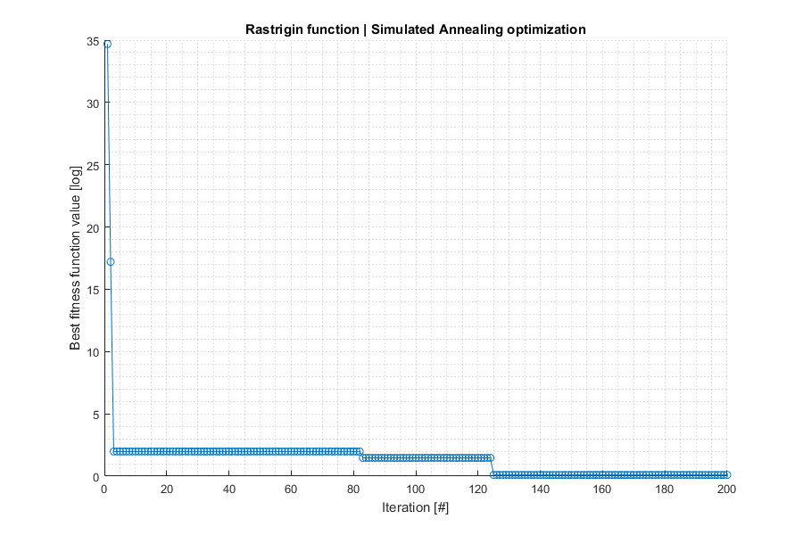
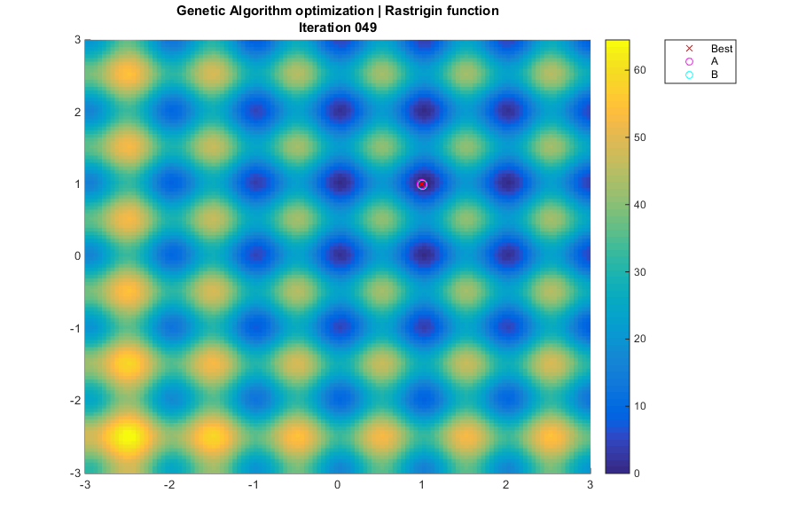

Example ASA
Find minima of a function with Simulated Annealing (SA) algorithm
Programmers: Manel Soria (UPC/ETSEIAT) David de la Torre (UPC/ETSEIAT) Arnau Miro (UPC/ETSEIAT) Date: 16/04/2015 Revision: 2
Contents
ASA
% Our test is a R^2->R function based on Rastrigin function. % It is challenging because it has infinite local extrema, located at % integer numbers (ie, 8,-9) % The global minimum is at (1,1), and its value is 0 ras = @(x,y) 20+(x-1).^2+(y-1).^2-10*(cos(2*pi*(x-1))+cos(2*pi*(y-1))); % Define SA function options opts.ninfo = 10; % Verbosity level (print every # iterations) opts.einfo = 0; % Print extended information opts.label = 10; % Label (identification purposes) opts.nhist = 2; % Save history (0=none, 1=fitness, 2=all data) % Define SA parameters nitemax = 200; % Maximum number of iterations mu = 5; % Thermal transition probability parameter goal = 1E-5; % Target fitness value % Auxiliary function ranrange = @(a,b,n) a + (b-a)*rand(n,1); % n random values between a i b % Define SA functions fitfun = @(x) ras(x(1),x(2)); % Fitness function - TO BE MINIMIZED mutfun = @(x,f) x + ranrange(-0.3,0.3,2); % Mutation: small random mov prifun = @(x) fprintf('%f %f ',x(1),x(2)); % Print an individual % Initial guess A0 = [2*rand(); 2*rand()]; % Execute Simulated Annealing [ bestIndASA, bestFitASA, nite, lastPopASA, lastFitASA, history ] = ... asa( opts, A0, nitemax, mu, goal, ... fitfun, mutfun, prifun ); % Now, we can easily improve the accuracy of the local extremum found options = optimset('TolFun',1e-8,'Display','none'); [bestIndFMS,bestFitFMS] = fminsearch(fitfun,bestIndASA,options); % Display results of aga and fminsearch algorithms fprintf('\nAlgorithm \tBest individual (x,y) \tValue\n'); fprintf('ASA \t\t%1.6f,%1.6f \t\t%1.6E\n',bestIndASA,bestFitASA); fprintf('FMS \t\t%1.6f,%1.6f \t\t%1.6E\n',bestIndFMS,bestFitFMS);
SA label=10 nite=1 best= 1.977942 0.668953 fitA=16.036919 fitbest=16.036919 SA label=10 nite=10 best= 1.997295 1.047945 fitA=1.448665 fitbest=1.448665 SA label=10 nite=20 best= 1.785977 0.941266 fitA=9.053145 fitbest=1.448665 SA label=10 nite=30 best= 2.137619 1.450080 fitA=24.520093 fitbest=1.448665 SA label=10 nite=40 best= 2.009427 1.197713 fitA=7.849081 fitbest=1.448665 SA label=10 nite=50 best= 0.995245 0.993723 fitA=0.012300 fitbest=0.012300 SA label=10 nite=60 best= 0.995245 0.993723 fitA=0.012300 fitbest=0.012300 SA label=10 nite=70 best= 0.995245 0.993723 fitA=0.012300 fitbest=0.012300 SA label=10 nite=80 best= 0.995245 0.993723 fitA=0.012300 fitbest=0.012300 SA label=10 nite=90 best= 0.995245 0.993723 fitA=0.012300 fitbest=0.012300 SA label=10 nite=100 best= 0.995245 0.993723 fitA=0.012300 fitbest=0.012300 SA label=10 nite=110 best= 0.995245 0.993723 fitA=0.012300 fitbest=0.012300 SA label=10 nite=120 best= 0.995245 0.993723 fitA=0.012300 fitbest=0.012300 SA label=10 nite=130 best= 1.031813 0.999162 fitA=0.200257 fitbest=0.012300 SA label=10 nite=140 best= 1.031813 0.999162 fitA=0.200257 fitbest=0.012300 SA label=10 nite=150 best= 1.031813 0.999162 fitA=0.200257 fitbest=0.012300 SA label=10 nite=160 best= 1.031813 0.999162 fitA=0.200257 fitbest=0.012300 SA label=10 nite=170 best= 0.990830 0.986794 fitA=0.051257 fitbest=0.012300 SA label=10 nite=180 best= 0.990830 0.986794 fitA=0.051257 fitbest=0.012300 SA label=10 nite=190 best= 1.023469 1.007606 fitA=0.120553 fitbest=0.012300 SA label=10 nite=200 best= 1.120631 1.166375 fitA=7.763895 fitbest=0.012300 Algorithm Best individual (x,y) Value ASA 0.995245,0.993723 1.230031E-02 FMS 1.000003,0.999997 4.028724E-09
Plot fitness
% Get fitness history if opts.nhist>1 % Full history; get fitness values fithist = zeros(length(history),1); for i=1:length(history) fithist(i) = history{i,6}; end; else fithist = history; % Simple history end; % Create figure fh1 = figure('Position',[400,200,900,600]); hold on; % Plot history semilogy(fithist,'o-'); % Beautify plot grid minor; title('Rastrigin function | Simulated Annealing optimization'); xlabel('Iteration [#]'); ylabel('Best fitness function value [log]'); hold off;
Plot iterations
% Only show generations when outputting full history if opts.nhist>1 && iscell(history) % Create figure fh2 = figure('Position',[400,200,900,600]); % Plot rastrigin function [x,y] = meshgrid(-3:0.05:3,-3:0.05:3); z = ras(x,y); bh = surf(x,y,z,'LineStyle','none'); colorbar('Location','EastOutside'); view(0,90); hold on; % Virtual position for population z = 100; % Legend lh = plot3(0,0,-z,'rx',0,0,-z,'mo',0,0,-z,'co'); legend(lh,'Best','A','B','Location','NorthEastOutside'); % Plot generations ph = cell(length(history),3); % Handles for iter=1:length(history) % Title title({'Genetic Algorithm optimization | Rastrigin function';... sprintf('Iteration %03.0f',iter)}); % Plot best x = history{iter,5}(1); y = history{iter,5}(2); ph{iter,1} = plot3(x,y,z,'rx','MarkerSize',8); % Plot A x = history{iter,1}(1); y = history{iter,1}(2); ph{iter,2} = plot3(x,y,z,'mo','MarkerSize',8); % Plot B x = history{iter,2}(1); y = history{iter,2}(2); ph{iter,3} = plot3(x,y,z,'co','MarkerSize',8); % Wait pause(0.1); % Delete individuals if iter~=length(history) % Keep last frame for i=1:3, delete(ph{iter,i}); end; end; end; end;